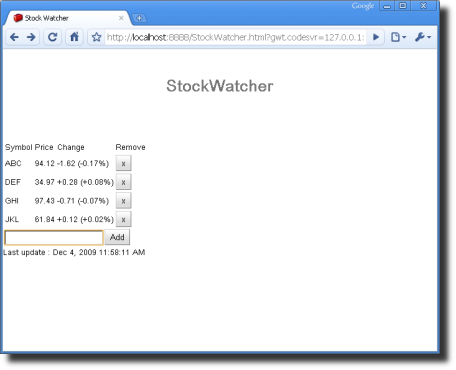

Except as otherwise noted,
the content of this page is licensed under the Creative Commons
Attribution 3.0 License.
Google Code offered in: English - Español - 日本語 - 한국어 - Português - Pусский - 中文(简体) - 中文(繁體)
At this point, you've built the user interface from GWT widgets and panels and wired in the event handlers. StockWatcher accepts input but it doesn't yet add the stock to the stock table or update any stock data.
In this section, you'll finish implementing all of StockWatcher's client-side functionality. Specifically, you'll write the code to the following:
Your initial implementation of StockWatcher is simple enough that your can code all its functionality on the client side. Later you'll add calls to the server to retrieve the stock data.
Your first task is to add the stock code and a Remove button to the stock table. Remember, the FlexTable will automatically resize to hold the data, so you don't have to worry about writing code to handle that.
You need a data structure to hold the list of stock symbols the user has entered. Use the standard Java ArrayList and call the list stocks.
public class StockWatcher implements EntryPoint {
private VerticalPanel mainPanel = new VerticalPanel();
private FlexTable stocksFlexTable = new FlexTable();
private HorizontalPanel addPanel = new HorizontalPanel();
private TextBox newSymbolTextBox = new TextBox();
private Button addStockButton = new Button("Add");
private Label lastUpdatedLabel = new Label();
private ArrayList<String> stocks = new ArrayList<String>();
import java.util.ArrayList;After the user enters a stock code, first check to make sure it's not a duplicate. If the stock code doesn't exist, add a new row to the FlexTable and populate the cell in the first column (column 0) with the stock symbol that the user entered. To add text to a cell in the FlexTable, call the setText method.
// Don't add the stock if it's already in the table.
if (stocks.contains(symbol))
return;
// Add the stock to the table.
int row = stocksFlexTable.getRowCount();
stocks.add(symbol);
stocksFlexTable.setText(row, 0, symbol);So that users can delete a specific stock from the list, insert a Remove button in the last cell of the table row. To add a widget to a cell in the FlexTable, call the setWidget method. Subscribe to click events with the addClickHandler method. If the Remove Stock button publishes a click event, remove the stock from the FlexTable and the ArrayList.
// Add a button to remove this stock from the table.
Button removeStockButton = new Button("x");
removeStockButton.addClickHandler(new ClickHandler() {
public void onClick(ClickEvent event) {
int removedIndex = stocks.indexOf(symbol);
stocks.remove(removedIndex);
stocksFlexTable.removeRow(removedIndex + 1);
}
});
stocksFlexTable.setWidget(row, 3, removeStockButton);You have one more TODO to code: get the stock price. But first do a quick check in development mode to see if Add Stock and Remove Stock functionality is working as expected.
At this point when you enter a stock code, StockWatcher should add it to the stock table. Try it and see.
Now you'll tackle that last TODO: get the stock price.
The most important feature of StockWatcher is updating the prices of the stocks the users are watching. If you were writing StockWatcher using traditional web development techniques, you would have to rely on full page reloads every time you wanted to update the prices. You could accomplish this either manually (making the user click the browser's Refresh button) or automatically (for example, using a <meta http-equiv="refresh" content="5"> tag in the HTML header). But in this age of Web 2.0, that's simply not efficient enough. StockWatcher's users want their stock price updates and they want them now...without waiting for a full page refresh.
In this section, you'll:
GWT makes it easy to update an application's content on the fly. For StockWatcher, you'll automatically update stock prices by using the GWT Timer class.
Timer is a single-threaded, browser-safe timer class. It enables you to schedule code to run at some point in the future, either once using the schedule() method or repeatedly using the scheduleRepeating() method. Because you want StockWatcher to automatically update the stock prices every five seconds, you'll use scheduleRepeating().
When a Timer fires, the run method executes. For StockWatcher you'll override the run method with a call to the refreshWatchList method which refreshes the Price and Change fields. For now, just put in a stub for the refreshWatchList method; later in this section, you'll implement it.
public void onModuleLoad() {
...
// Move cursor focus to the text box.
newSymbolTextBox.setFocus(true);
// Setup timer to refresh list automatically.
Timer refreshTimer = new Timer() {
@Override
public void run() {
refreshWatchList();
}
};
refreshTimer.scheduleRepeating(REFRESH_INTERVAL);
...
}import com.google.gwt.user.client.Timer;Create constant 'REFRESH_INTERVAL' then specify the refresh interval in milliseconds, 5000.
public class StockWatcher implements EntryPoint {
private static final int REFRESH_INTERVAL = 5000; // ms
private VerticalPanel mainPanel = new VerticalPanel();
private void addStock() {
...
// Add a button to remove a stock from the table.
Button removeStockButton = new Button("x");
removeStockButton.addClickHandler(new ClickHandler() {
public void onClick(ClickEvent event) {
int removedIndex = stocks.indexOf(symbol);
stocks.remove(removedIndex);
stocksFlexTable.removeRow(removedIndex + 1);
}
});
stocksFlexTable.setWidget(row, 3, removeStockButton);
// Get the stock price.
refreshWatchList();
}
private void refreshWatchList() {
// TODO Auto-generated method stub
}One of the primary ways GWT speeds AJAX development is by allowing you to write your applications in the Java language. Because of this, you can take advantage of static type checking and time-tested patterns of object-oriented programming. These, when combined with modern IDE features like code completion and automated refactoring, make it easier than ever to write robust AJAX applications with well-organized code bases.
For StockWatcher, you'll take advantage of this capability by factoring stock price data into its own class.
com.google.gwt.sample.stockwatcher.clientFile > New > ClassStockPriceFinish
package com.google.gwt.sample.stockwatcher.client;
public class StockPrice {
}
package com.google.gwt.sample.stockwatcher.client;
public class StockPrice {
private String symbol;
private double price;
private double change;
public StockPrice() {
}
public StockPrice(String symbol, double price, double change) {
this.symbol = symbol;
this.price = price;
this.change = change;
}
public String getSymbol() {
return this.symbol;
}
public double getPrice() {
return this.price;
}
public double getChange() {
return this.change;
}
public double getChangePercent() {
return 10.0 * this.change / this.price;
}
public void setSymbol(String symbol) {
this.symbol = symbol;
}
public void setPrice(double price) {
this.price = price;
}
public void setChange(double change) {
this.change = change;
}
}Now that you have a StockPrice class to encapsulate stock price data, you can generate the actual data. To do this you'll implement the refreshWatchList method. Remember the refreshWatchList method is called both when the user adds a stock to the stock table, and then every 5 seconds when the timer fires.
In lieu of retrieving real-time stock prices from an online data source, you'll create pseudo-random price and change values. To do this, use the GWT Random class. Then populate an array of StockPrice objects with these values and pass them on to the updateTable method.
/** * Generate random stock prices. */ private void refreshWatchList() { final double MAX_PRICE = 100.0; // $100.00 final double MAX_PRICE_CHANGE = 0.02; // +/- 2% StockPrice[] prices = new StockPrice[stocks.size()]; for (int i = 0; i < stocks.size(); i++) { double price = Random.nextDouble() * MAX_PRICE; double change = price * MAX_PRICE_CHANGE * (Random.nextDouble() * 2.0 - 1.0); prices[i] = new StockPrice(stocks.get(i), price, change); } updateTable(prices); }
import com.google.gwt.user.client.Random;
private void updateTable(StockPrice[] prices) {
// TODO Auto-generated method stub
}Finally, load the randomly generated price and change data into the StockWatcher table. For each stock, format the Price and Change columns, then load the data. To do this you'll implement two methods in the StockWatcher class.
/** * Update the Price and Change fields all the rows in the stock table. * * @param prices Stock data for all rows. */ private void updateTable(StockPrice[] prices) { for (int i = 0; i < prices.length; i++) { updateTable(prices[i]); } }
/**
* Update a single row in the stock table.
*
* @param price Stock data for a single row.
*/
private void updateTable(StockPrice price) {
// Make sure the stock is still in the stock table.
if (!stocks.contains(price.getSymbol())) {
return;
}
int row = stocks.indexOf(price.getSymbol()) + 1;
// Format the data in the Price and Change fields.
String priceText = NumberFormat.getFormat("#,##0.00").format(
price.getPrice());
NumberFormat changeFormat = NumberFormat.getFormat("+#,##0.00;-#,##0.00");
String changeText = changeFormat.format(price.getChange());
String changePercentText = changeFormat.format(price.getChangePercent());
// Populate the Price and Change fields with new data.
stocksFlexTable.setText(row, 1, priceText);
stocksFlexTable.setText(row, 2, changeText + " (" + changePercentText
+ "%)");
}
import com.google.gwt.i18n.client.NumberFormat;At this point, the Price and Change fields should be populated with the stock data you randomly generated. Try it and see.
The final piece of functionality you need to implement is the timestamp. You used a Label widget, lastUpdatedLabel, to create the timestamp in the UI. Now set the text for the Label widget. Add this code to the updateTable(StockPrice[]) method.
/**
* Update the Price and Change fields all the rows in the stock table.
*
* @param prices Stock data for all rows.
*/
private void updateTable(StockPrice[] prices) {
for (int i = 0; i < prices.length; i++) {
updateTable(prices[i]);
}
// Display timestamp showing last refresh.
lastUpdatedLabel.setText("Last update : "
+ DateTimeFormat.getMediumDateTimeFormat().format(new Date()));
}
import com.google.gwt.i18n.client.DateTimeFormat;
import java.util.Date;
Implementation Note: You may have noticed that the classes DateTimeFormat and NumberFormat live in a subpackage of com.google.gwt.i18n, which suggest that they deal with internationalization in some way. And indeed they do: both classes will automatically use your application's locale setting when formatting numbers and dates. You'll learn more about localizing and translating your GWT application into other languages in the tutorial Internationalizing a GWT Application.
At this point you've built the interface components and coded all the underlying client-side functionality for the StockWatcher application. The user can add and remove stocks. The Price and Change fields update every 5 seconds. A timestamp shows when the last refresh occurred.
Although you have not compiled StockWatcher yet, you can test it in production mode here: Run StockWatcher
For the sake of this tutorial, we introduced an error into the code. Can you detect it?
Look at the change percentages. Don't they seem a bit small? If you do the math, you'll discover that they appear to be exactly an order of magnitude smaller than they should be. There's an arithmetic error hiding somewhere in the StockWatcher code. Using the tools provided by GWT and your Java IDE, your next step is to find and fix the error.